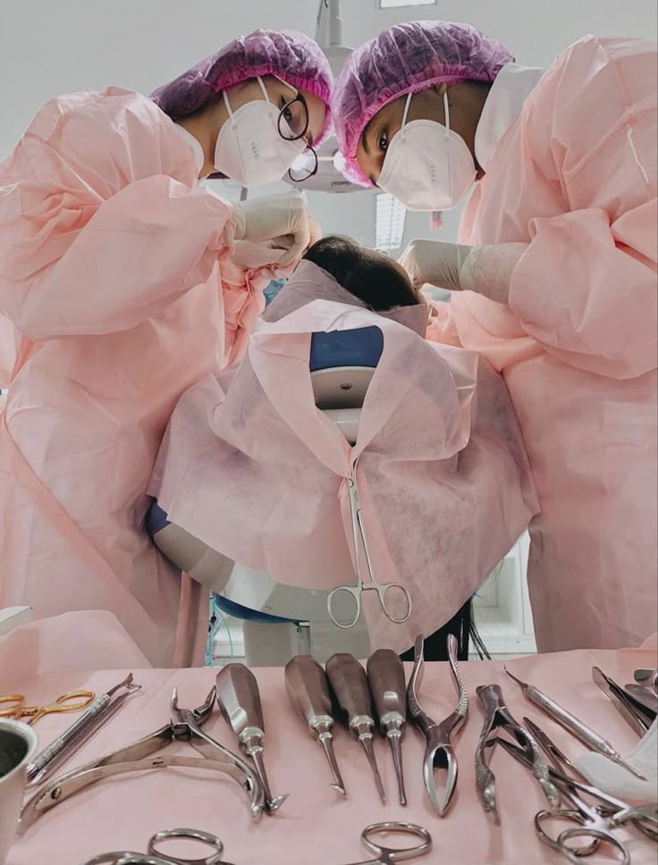

¡Bienvenido a Zafident!
En Zafident, creemos que cuidar tu sonrisa debe ser una experiencia relajada y llena de luz. Nos alejamos del ambiente frío de las clínicas tradicionales para ofrecerte un espacio cálido y alegre, diseñado especialmente para que te sientas como en casa desde el primer momento. Nuestro equipo no solo está aquí para cuidar tus dientes, sino para escucharte con una sonrisa. Con música suave, aromas relajantes y un trato humano excepcional, transformamos tu visita al dentista en un momento de bienestar para ti y tu familia. ¡Porque una sonrisa sana comienza con un corazón tranquilo!
